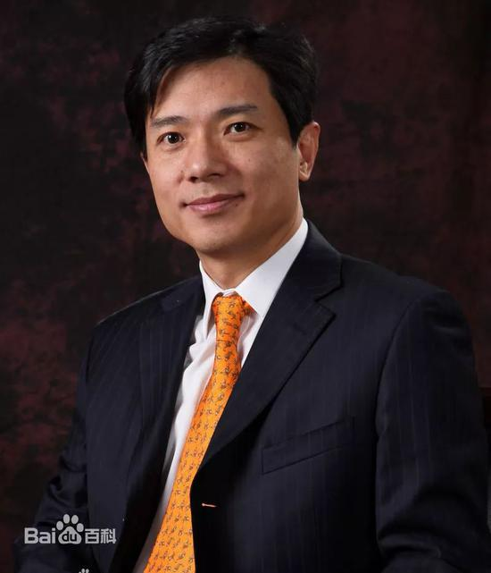
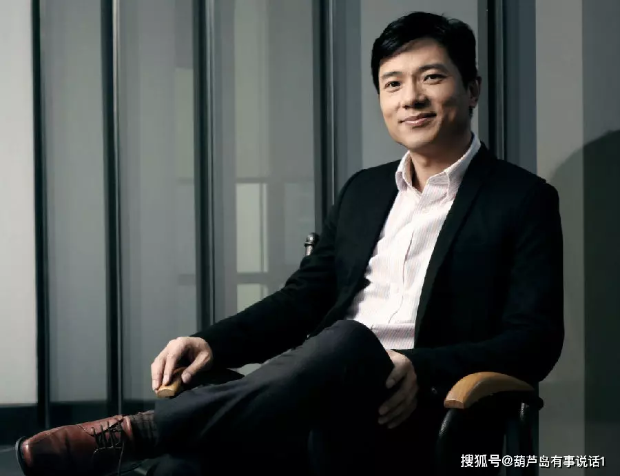

李彦宏（个人简介）
李彦宏（1968年11月17日－），山西阳泉人，中国企业家。百度公司的创建者，现任董事长兼首席执行官以及全国工商联副主席。研究生学历。2015年胡润全球富豪榜位列第47名，身价180亿美元。[4]李彦宏的资产基本都来自百分之二十点八的百度控股，这些股票直接由李彦宏及其妻子马东敏所有，并通过注册地维珍群岛的
Handsome Rewards Ltd.
控股公司持有。李彦宏还拥有京东商城百分之一的股份。截止到2014年2月28日，李彦宏本人实益拥有百度公司557万股A类股和B类股，相当于百度公司15.9%的股份，这低于2012年12月31日他持有的558万股股票即相当于百度公司16%的股份。
重要事件
- 1968年，李彦宏出生于山西省阳泉市[6]，曾经考入山西阳泉晋剧团。
- 1987年，李彦宏考入北京大学，在北大读书时，李彦宏立志锁定目标留学美国，精研托福、GRE等英文书籍，过着教室、图书馆和寝室三点一线的生活。
- 1991年北京大学信息管理本科毕业，后在美国纽约州立大学布法罗分校获得计算机科学硕士，在留学期间，他白天上课，晚上补习英文和编程，经常学习到凌晨两点。
- 1994年，李彦宏在华尔街的道·琼斯子公司实习，并且工作了三年半时间，曾担任道·琼斯子公司高级顾问、《华尔街日报》网络版实时金融信息系统设计人员。
- 1997年，李彦宏离开华尔街，前往硅谷的搜索引擎公司Infoseek任职工程师。
- 1999年，Infoseek被迪士尼收购，再次调整战略。
成就和荣誉
- 2001年被评选为“中国十大创业新锐”之一。
- 2002年、2003年获得中国首届、第二届“IT十大风云人物”称号。
- 2004年1月15日，当选中国第二届“京城十三新锐”。
- 2004年4月，当选中国第二届“中国软件十大杰出青年”。
- 2005年1月，当选中国全国青联委员。
- 2005年8月23日，获得中国第十二届“东盟青年奖”。
- 2005年12月28日，获得中国“CCTV2005中国经济年度人物”。
- 2006年12月10日，当选美国《商业周刊》2006年全球“最佳商业领袖”。
- 2009年12月8日，获2009年度华人经济领袖奖。
参考书目
| 年份 |
专辑名 |
| 百度董事长兼首席执行官李彦宏简介. 人民网. [2012-02-09]. |
（原始内容存档于2012-02-11）. |
| Robin Li. China Daily. [2011-12-30]. |
（原始内容存档于2015-05-18）. |
| 存档副本. 福布斯中文网. [2015-05-08]. |
（原始内容存档于2015-05-06）. |
生活照


生平
李彦宏（1968年11月17日－），山西阳泉人，中国企业家。百度公司的创建者，
现任董事长兼首席执行官以及全国工商联副主席。研究生学历。2015年胡润全球富豪榜位列第47名，身价180亿美元